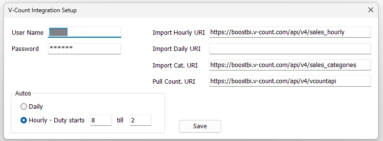

V-Count Settings
V-Count Settings stores the credentials and API endpoints used by IMS to integrate Store traffic/people-counter information with the background automation process.
Open the moduleIntegration → V-Count Settings

Connection settings
| Field | Purpose |
|---|---|
| User Name / Password | Credentials used by the V-Count integration. |
| Import Hourly URI | Endpoint used for hourly V-Count sales/integration data where that interface is enabled. |
| Import Daily URI | Endpoint used for daily V-Count sales/integration data where that interface is enabled. |
| Import Cat. URI | Endpoint for category-related integration data where required. |
| Pull Count. URI | Endpoint used to retrieve people-counter/traffic information for IMS. |
Autos schedule
The screen also controls how the V-Count job is represented in IMS Autos:
| Mode | Behavior |
|---|---|
| Daily | Uses the daily mode and clears the stored hourly duty window. |
| Hourly - Duty starts … till … | Stores an hourly duty window. Both hour values must be valid 24-hour values from 0 through 23. |
- Enter the V-Count User Name. Enter a password for initial setup or replacement; keep the displayed stored-password mask unchanged to retain the existing password.
- Confirm the required V-Count URI values.
- Select Daily or Hourly.
- For Hourly mode, enter the duty-start and duty-end hours.
- Click Save. IMS saves the integration settings and updates the V-Count duty values used by IMS Autos.
Current traffic workflowThe people-count data retrieved from V-Count is used by IMS reporting for Store traffic and conversion-rate analysis. The scheduled retrieval itself is performed by the server-side automation process rather than by leaving this setup window open.
Validation
IMS requires a V-Count User Name, an existing stored password or a newly entered password, and at least one of the hourly/daily import endpoints. New passwords are saved through IMS Security Guard & Secure Bootstrap; a credential-save error stops the settings save. When Hourly mode is selected, invalid hour values are rejected before the settings are saved.